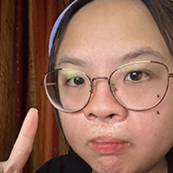

About Me | Jaz Sisouvong
Illustration
Jaz Sisouvong is an illustrator and writer who hails from Northern Virginia. A proud community college student, she is now an undergraduate at Virginia Commonwealth University, she is currently studying Communication Arts, with a tentative dual degree in sociology and a minor in media studies. You can find Jaz's art on Instagram at @JazGotJazzHands, where she irregularly posts her art, or at the username @JazJustDraws, where she talks about anything non-art related.
Sociology
An aspiring art director and author, Jaz's interests fall somewhere between the artistic and the sociological, and how art shapes society as a whole. Jaz's background as a quadri-cultural American child of immigrants has lent itself to her interest in uplifting Asian American creatives, where she currently volunteers as a coordinator for ECAASU's Artist in Residence program.
Writing
In Jaz's free time, she can be found reading fantasy romance books and graphic novels (her favorite pastime), watching something animated (will it be something by Sony Pictures or from Japan?), invested in some sort of procedural show (9-1-1, or maybe some xianxia drama?), or writing her fantasy romance novel (that one's not getting publicized). The list goes on - consuming and creating media is her lifestyle!